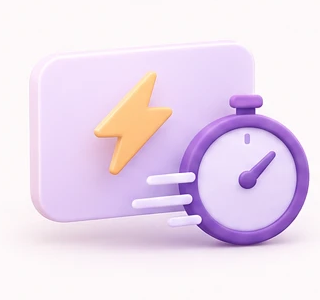
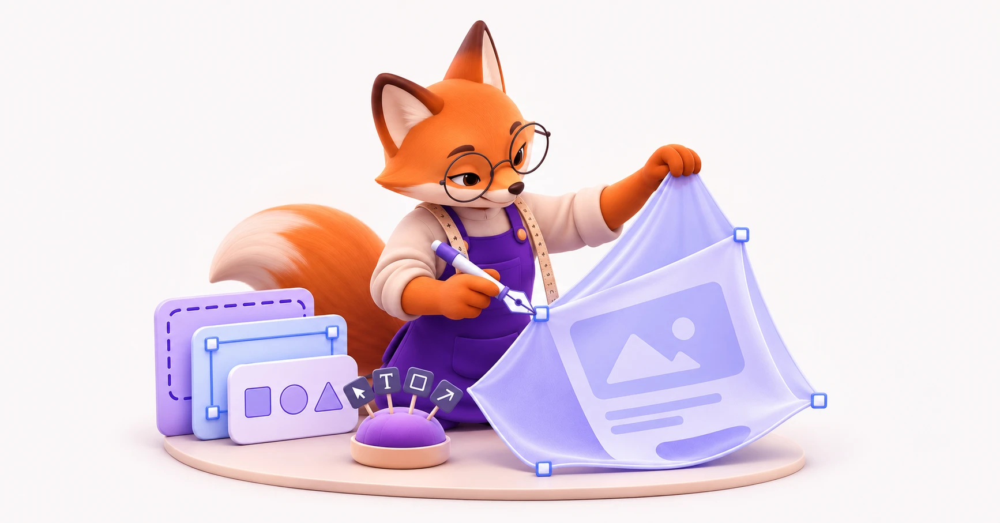
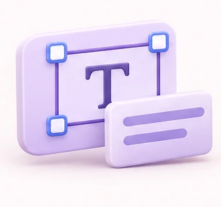
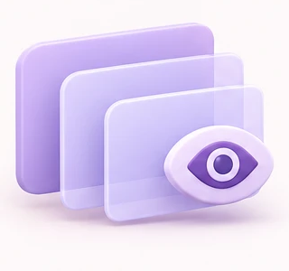

Zero-Latency Feedback
Critique runs instantly on your selected frames without waiting for cloud queues or context-switching tabs.
Instant, heuristic critique on your active Figma canvas. Spot hierarchy drift, spacing tension, and rogue tokens the moment you explore.
Install Plugin on Figma
Editorial Series
Evaluating the balance of negative space and typographic tension across multi-column modular layouts.
UI Atelier offers gentle design nudges while you explore layout compositions.

Critique runs instantly on your selected frames without waiting for cloud queues or context-switching tabs.

Analyzes measure, baseline cadence, and optical hierarchy. Alerts you when your display serifs feel suffocated.

Nudges appear directly as soft non-destructive overlay badges over your layers, ready to accept or dismiss with one keystroke.
Open Figma and trigger your first critique in seconds.